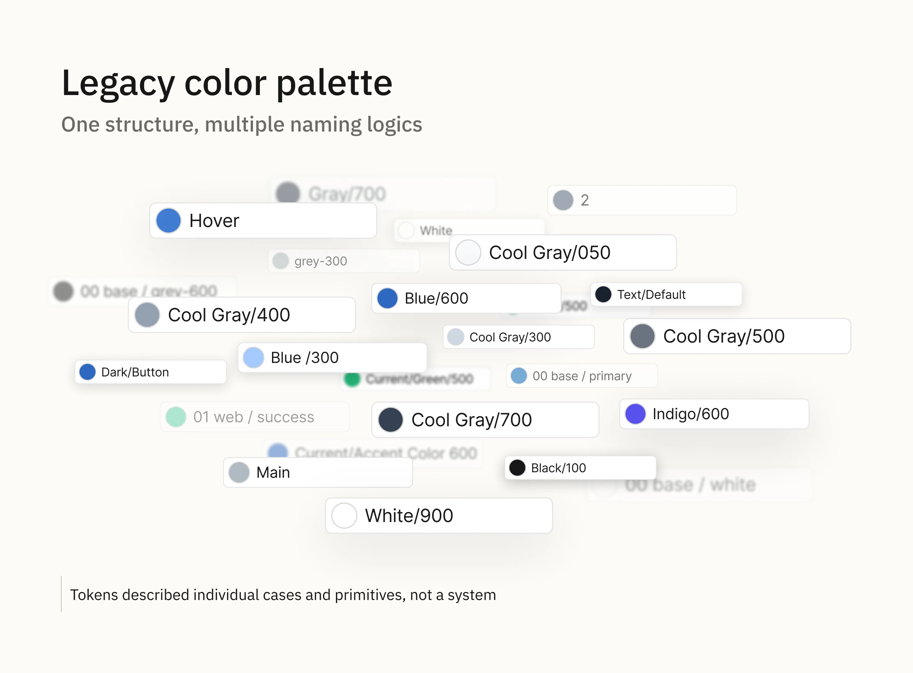
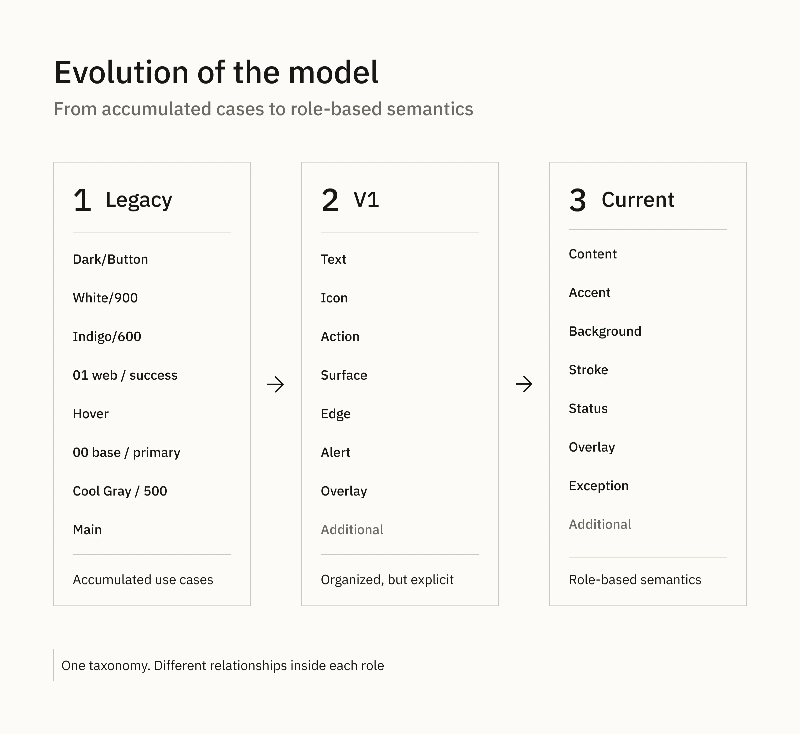
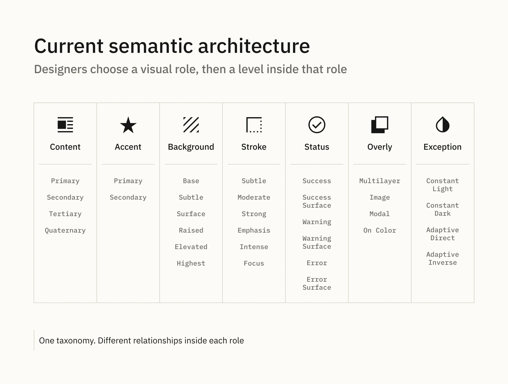
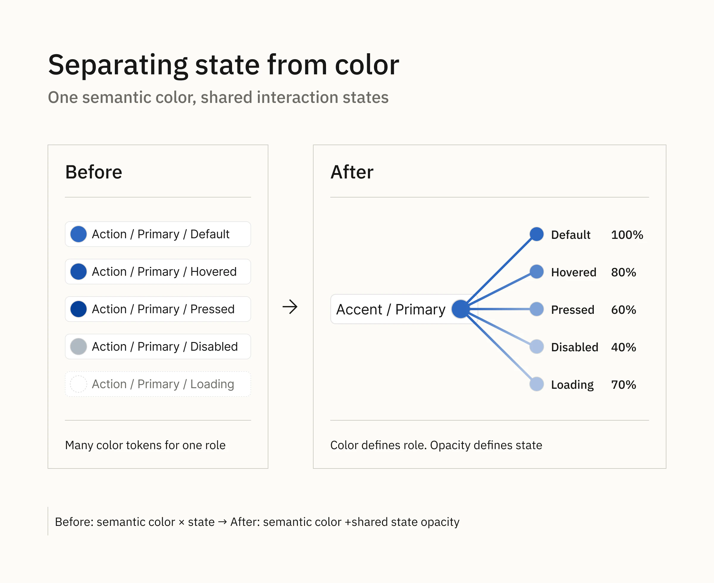
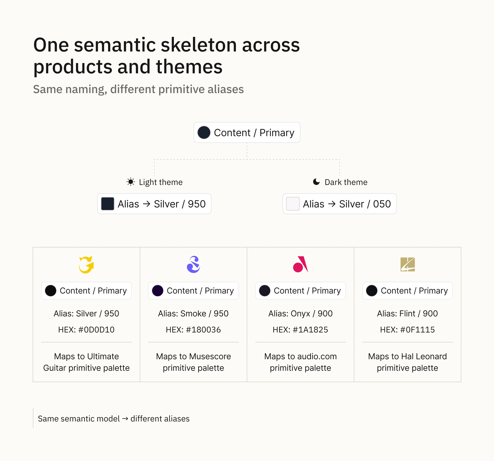
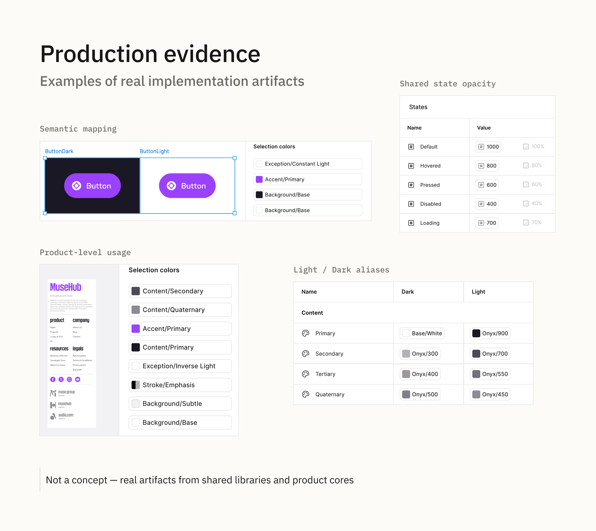

Muse · Color system · Design tokens
Semantic Color Architecture across Muse products
I redesigned Muse color semantics so one structure could support six product systems across Web and App, including four products with theming.
Overview
How I redesigned Muse color semantics so one structure could support six product systems, Web and App, including four products with theming — without encoding every component and state into the token system.
6 products · Web & App · 4 themed products · 1 semantic structure
My role: author of the shared cross-product semantic structure and naming logic; co-author of the shared opacity-state model; maintainer of product Core adoption.
01 — The old model described accumulated cases
When I joined the product, color tokens had grown around individual use cases. Names mixed roles, components, themes, states and hierarchy: Main, Text, Icon, Dark/Text, Dark/Button, Hover, Disable, 1, 2, 3.
The problem was not only naming. The structure made it hard to predict where a new token should go, and every new product could create another branch of exceptions.
The system described existing cases rather than a reusable model of the interface.

02 — My first structure fixed the chaos, but not the abstraction level
My first semantic model introduced predictable groups such as Text, Icon, Action, Surface, Edge, Alert, Overlay and Additional.
This was a major improvement, but it still encoded too much context. Text and Icon duplicated similar roles, while Action / Primary / Hovered and similar tokens tied color semantics directly to component states.
As the Design System expanded across products, this explicit model started to scale poorly.

03 — Designing semantics around decisions, not components
I reframed the question from “Which token is meant for this exact use case?” to “What kind of visual role am I choosing?”
The shared model became:
Content · Accent · Background · Stroke · Status · Overlay · Exception
A component now interprets the semantic role instead of being encoded into it. Content / Secondary can be used for text, an icon or another foreground element. Background / Raised does not need to know whether the surface is a card, panel or future component.
The naming inside each group follows the decision designers actually make:
- Content: hierarchy —
Primary → Secondary → Tertiary → Quaternary - Background: surface levels —
Base → Subtle → Surface → Raised → Elevated → Highest - Stroke: intensity —
Subtle → Moderate → Strong → Emphasis → Intense
Accent, Status, Overlay and Exception follow the same principle but use naming appropriate to their own role. Overlay, for example, covers semi-transparent compositional layers such as modal backdrops and image veils.
I also treated naming as part of usability: token names had to remain short, easy to scan, visually distinguishable in lists and practical in full token paths for both designers and developers.
A consistent taxonomy does not require the same naming pattern everywhere. Each group should reflect the relationship between its values.

04 — Separating interaction state from color
The idea of using opacity for interaction states already existed in Ultimate Guitar. Our architect suggested taking it into the shared system.
I challenged the approach with engineering, then refined the irregular product values into a consistent shared scale and added the missing Loading state:
Default 100% · Hovered 80% · Loading 70% · Pressed 60% · Disabled 40%
This removed the need to create separate color tokens for every role/state combination.
Before: semantic color × component role × state
After: semantic color + shared state opacity
My contribution was evaluation, refinement, standardisation and cross-product adoption rather than the original invention of the idea.

05 — One semantic skeleton across products and themes
The same semantic names are used across Product Cores. What changes are the aliases to each product's primitive palette.
A component can always use Content / Primary. In a light theme it may resolve to a dark primitive; in a dark theme it resolves to a light primitive. The component and semantic token remain unchanged.
Products without theming use the same structure with a single mode, so themed and non-themed products do not require separate semantic architectures.
Product-specific semantics stay in Additional, extending the Product Core without changing the shared model.
Same naming → same semantic model → different aliases.

06 — What changed for designers
The practical goal was to make color selection easier without removing useful constraints.
Before: find the token created for the exact use case.
After: choose the visual role, then choose the hierarchy or intensity.
Foreground → Content
Surface → Background
Boundary → Stroke
Brand emphasis → Accent
System feedback → Status
The main rule is simple: do not use Background tokens for content or Stroke tokens as backgrounds. Within the correct semantic group, designers can choose the value that best fits the composition without borrowing colors from unrelated roles.

Outcome
One semantic structure now covers six product systems across Web and App, including four products with theming.
Light/Dark differences are handled through aliases. Interaction states use one shared opacity scale instead of duplicated color tokens. Product-specific semantics remain local in Additional.
For designers, the mental model changed from memorising exact use-case tokens to choosing role → hierarchy / intensity.